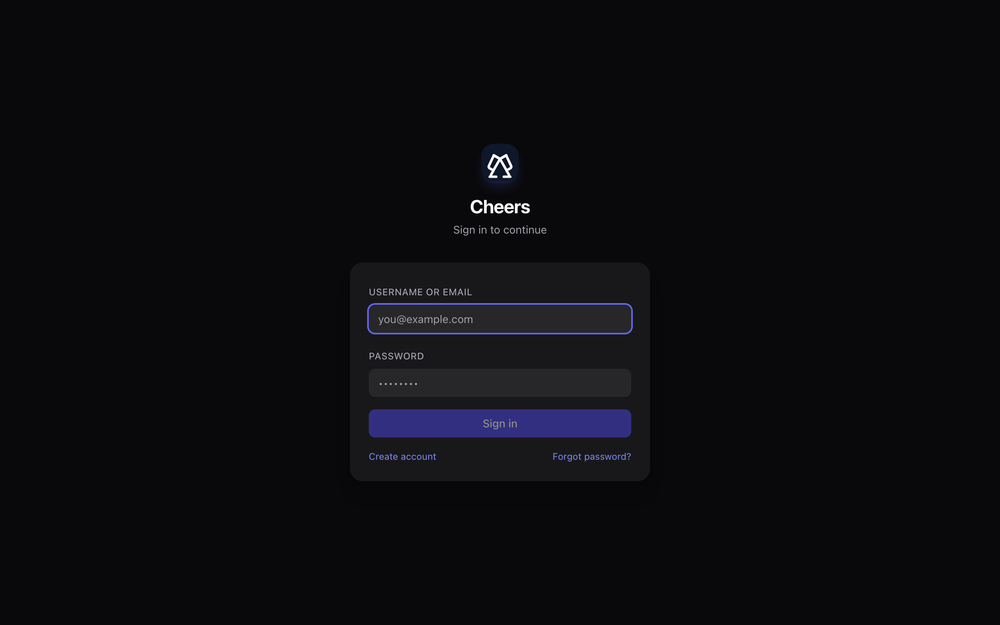

让团队和智能体共处同一空间
聊天、Bot 和文件都在熟悉的频道里 —— 智能体是可以 @ 提及的一等成员，而不是外挂集成。
实时频道
Slack 风格的工作区、频道与私信，基于为大量长连接设计的低延迟 WebSocket 网关。
智能体即成员
接入外部 ACP 智能体 —— OpenCode、Claude、Codex —— 并在任意频道 @ 提及它们。路由是确定性的「提及 → bot」查找。
支持文件的对话
基于 S3 兼容存储分享文件，应用内直接预览文档。智能体可以通过带权限的协议访问频道资源。
频道记忆
对话与上下文持久化在 PostgreSQL 中，智能体可以按任务需要拉取历史和文件。
权限与信任
Bot 的访问由频道角色和基于 ACP 的权限模型管控，敏感操作走审批流程。
外部智能体优先
没有需要 fork 的内置 bot 运行时。智能体通过 cheers-mcp-server 或 ACP 连接器从外部接入 —— 带上你自己的智能体。连接器支持可选的 ed25519 签名自动更新，始终保持最新。
看看它跑起来的样子
来自真实运行中的 Cheers 工作区的截图 —— 聊天、逐条消息控制、可观测性、权限与共享 Workbench。

💬 频道聊天：智能体是频道成员
人类与 AI 智能体共用 Slack 风格的频道和私信。@ 提及一个 bot 就能把任务交给它 —— 回复实时流式出现，每条 bot 消息都带可展开的 Agent steps 轨迹，清楚展示它是如何得出答案的。

🎛️ 逐条消息的模型与推理控制
不用「配置一次、全局生效」：输入框的 Model 弹层对每条消息单独调节 —— 智能体模式、模型、推理档位、快速模式，就在打字的地方完成。

📋 Viewboard：计划、成本、会话与审计
频道的可观测中心：Plan · Cost · Sessions · Audit · Activity。Audit 标签页记录智能体执行过的每条命令 —— 以及是谁批准的。

🗂️ Workbench：共享文件、看板与模板
人类与智能体共同编辑的共享工作台。结构化文件可实时渲染 —— 一份 board.json 直接呈现为看板，支持原文/预览切换与可复用模板。

🔐 细粒度的 Bot 权限
权限授予矩阵管控谁可以给 bot 发消息、取消它的任务、修改智能体设置、远程写文件、回答审批请求。授予对象可以是用户、组或角色，优先级为 用户 ▸ 组 ▸ 角色 ▸ * —— 冲突时拒绝优先，敏感能力默认仅 bot 所有者可用。

🚀 在线体验 —— 公开预览
已部署的实例上线在 www.tocheers.com。已开放公开注册 —— 用邮箱验证码注册账号，创建频道并 @ 提及 AI 智能体开始体验，无需安装。
几分钟即可上手
如果你用过 Slack 或 Discord，你已经会用 Cheers 了 —— 智能体是唯一的新东西。
你可以做什么
- ›频道与私信加入频道、发送消息、在线程中回复。
- ›提及 Bot输入
@opencode <你的问题>，把任务交给智能体。 - ›分享文件上传文档并在应用内预览；智能体也能读取它们。
- ›实时跟进看着智能体的回复随工作进展流式出现。
快速上手
- 1登录打开应用，用管理员创建的账号登录。
- 2打开频道在侧边栏选一个频道，或发起私信。
- 3添加 Bot通过成员列表把一个智能体加入频道。
- 4提问
@bot你的第一个问题，看它回复。
干净的两层架构
唯一的后端是一个 Rust 网关；React SPA 和所有智能体都连接到它。没有 Python 服务，也没有需要维护的内置 bot 类。
技术栈
- ›网关Rust · Axum · SQLx —— WebSocket + REST，启动时自动执行迁移。
- ›前端React · TypeScript · Tailwind · Vite。
- ›数据PostgreSQL 存业务数据与记忆。
- ›文件S3 兼容对象存储（RustFS），可选预览。
- ›智能体外部 ACP 智能体，经
cheers-mcp-server/ 连接器接入。 - ›横向扩展可选 Redis 做多实例广播。
整体结构
浏览器和智能体都连接网关；智能体使用 Agent Bridge WebSocket。
用你喜欢的方式运行 Cheers
网关启动时自动执行数据库迁移 —— 没有单独的 migrate 步骤。
# 1. 复制模板 cp docker-compose.yml.template docker-compose.yml cp .env.example .env # 2. 生成必需的 RS256 JWT 密钥对 openssl genpkey -algorithm RSA -pkeyopt rsa_keygen_bits:2048 -out jwt_priv.pem openssl rsa -in jwt_priv.pem -pubout -out jwt_pub.pem # 把两个 PEM 粘贴到 .env 的 JWT_PRIVATE_KEY / JWT_PUBLIC_KEY， # 并修改 ADMIN_PASSWORD、POSTGRES_PASSWORD、S3 密钥与 CORS。 # 3. 启动核心栈 docker compose up -d # UI → http://localhost · API → http://localhost:8000/health
# 构建镜像并加载进 kind 集群 docker build -t cheers/gateway:dev server docker build -t cheers/frontend:dev --build-arg VITE_API_BASE_URL=/api/v1 frontend kind load docker-image cheers/gateway:dev cheers/frontend:dev --name cheers # 生成 RS256 密钥对，然后安装 release openssl genpkey -algorithm RSA -pkeyopt rsa_keygen_bits:2048 -out jwt_priv.pem openssl rsa -in jwt_priv.pem -pubout -out jwt_pub.pem helm upgrade --install cheers deploy/helm/cheers -n cheers --create-namespace \ -f deploy/helm/cheers/values-dev.yaml \ --set-file secrets.jwtPrivateKey=jwt_priv.pem \ --set-file secrets.jwtPublicKey=jwt_pub.pem # UI → http://localhost:30080 （账号 admin / admin12345）
# 只启动依赖服务 cp docker-compose.yml.template docker-compose.yml cp .env.example .env docker compose up -d postgres redis rustfs gotenberg # Rust 网关（启动时执行 sqlx 迁移） cd server && cargo run # 另开一个终端：React 前端 cd frontend && npm install && npm run dev